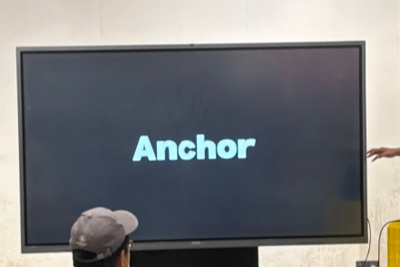
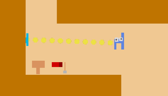
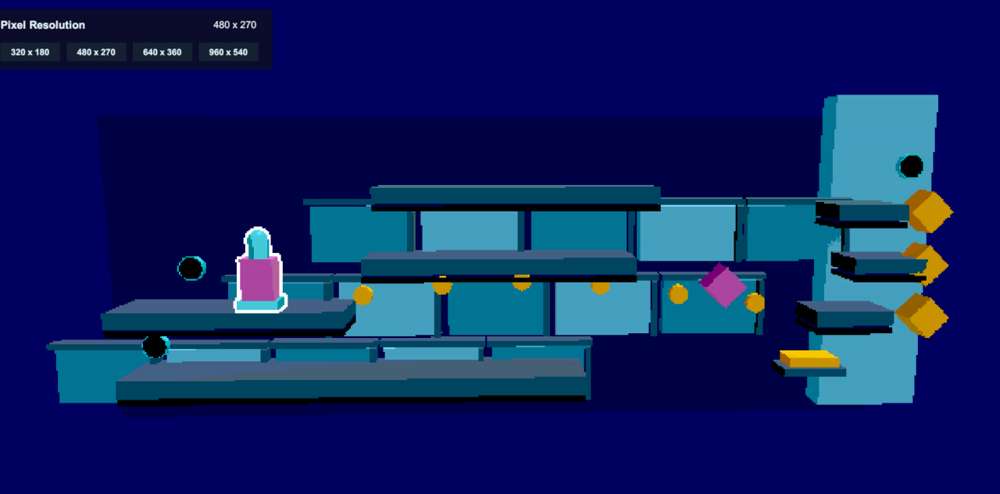
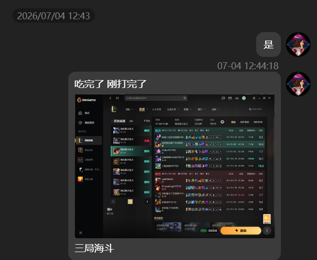
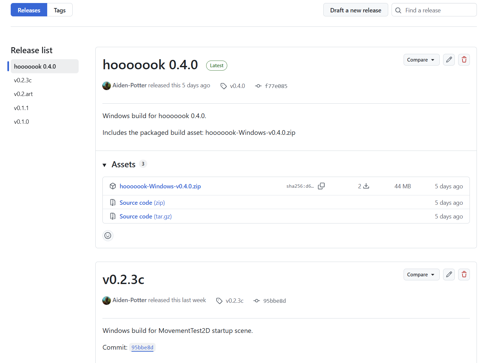
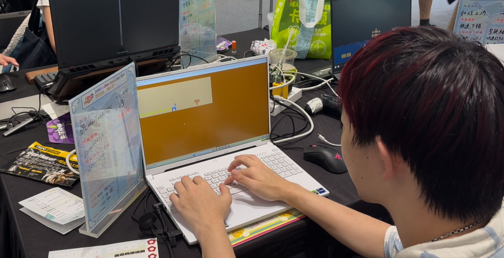
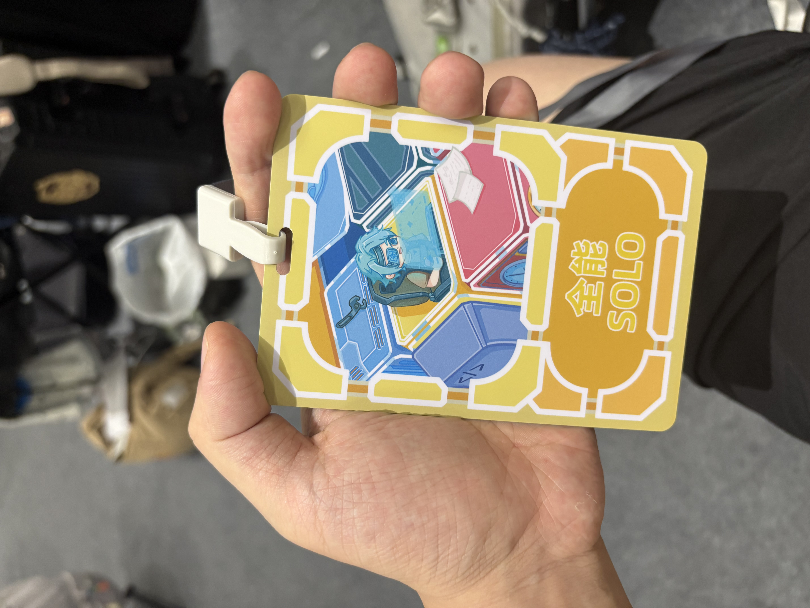

关于我和 Codex 的 2026 CGJ
这个人几次想跑，最后还是带着电脑和他的codex去了现场
于2026年7月3-5日参加了一场广州gamejam，这次也是一个人参加，开始逐步适应solo的开发节奏了，我和我的codex这两天也是拉满才做出一个看起来能玩的东西。
可以参考链接，后面也许会优化下设计
https://flyingziming.itch.io/hooooook

我在开发期间，基本没写一行代码，有需求都是和codex聊聊，本次的主题是anchor，我脑暴了一会感觉没能想到很好的东西，除了钩子以外好像不想做别的，于是选择了做钩子。
其他游戏已经有了很多钩子，比如银河战士的grapple beam、时之笛hookshot、ow 黑百合 破坏球、lol的阿克尚、闪避刺客的抓钩、haak的抓钩等等，其实想到这些游戏 我就感觉，已经这么多人做过抓钩了，为什么我还要做抓钩，其实对于要不要做，会不会好，仍抱有疑虑。
于是还想了几个其他的点，但是好像抓钩的想法在我脑子里挥之不去，结合之前自己一直有些想法，想做的一个能力好多种用法 逐渐发现用法的游戏，想带给玩家一种发现的体验，于是决定还是要做，围绕如何使用抓钩，主要是输入部分进行了一些拓展。
接下来是我对开发的感受和回顾。

我下午请假了，第一天到达现场，大家很早就来了，大概一点， 但是三点才开题，这期间的时间很难度过，两点半前是广告时间，宣传AI建模工具等等，人们自顾自的坐着，看着一些人挤在一起讨论，我也找到了一位曾经见过面的开发者，不过他们都有一个共同点，看起来都很年轻，可能都是学生，这样的氛围让我感觉我很难找话题进去，就连过去搭话好像都会显得太主动，几次失败的组队经历也让我对组野队不报任何希望，就选择solo，自己玩，如果想放弃就放弃，这样便好。
其实往好了想，如果想放弃便可放弃但我依旧还是做出了这个游戏，便说明我是想做游戏的，这样对我的心是一种安慰。
于是我和同桌的solo开发者吃了个饭，早早的回到了家中，我solo，其实也不打算在现场开发，我是那种在嘈杂环境下集中不了精神的人，热闹的现场固然是热闹的，但是并不利于我找出一个好机制。
脑暴了一段时间，四处走了走，感觉大家也都想的差不多，但是好像愿意深度交流一下想法的同学并不多，好像大家都有自己的团体，倒是和同桌的solo联盟朋友交流上了，我们晚上还一起吃了饭。
回到家里我依旧想着钩子，列出了我认为的抓钩游戏，看到了塞尔达的抓钩可以让人飞过去探索一些区域，看到了一些抓钩摆荡的游戏，而我其实想做的体验不能太动作，毕竟平台解谜一个比较大的痛点就是让玩家不知道是操作不对还是想的不对，想了想最后决定砍掉任意方向出钩，以保证关卡有一种需要正确顺序的感觉，我一直觉得解谜会包含一种找顺序的体验。
在列出了大体需求之后，我就开始操控codex干活了，先让他做了一个2d平台跳跃控制器，直接让他参考corgi的，一开始他写出了动态刚体的控制器，虽然不是很符合我预期但是也能用，基本没有什么成本，迭代一会后面又改成了类似corgi的kinematic的控制器，然后我就开始讲机制，他就写出了一个钩子控制器，然后我逐步把需求想明白，每想一会就让他做一版感受一下，迭代起来非常爽。

于是我开了另一个codex，让他担任我的技术美术工程师，给了他一个画面风格让他复刻（没错丢了两张cato商店截图），开始的时候做的让人感觉还不错，不过我没具体关注实现，做了一个卡通材质+降采样像素+描边，描边这块本来还想有内外描边区别，结果gpt试了很久也分不清到底什么是外描边什么是内描边，陷入了幻觉，想把他纠正回来要消耗不少话语，不过弄出来画风还是可以的，我便是准备验收了然后让他写了文档，准备交给下一个codex继续制作，角色控制器也是都让他开发完功能简单写个文档。
于是我觉得进度大好，便开始了我gamejam的传统异能——先玩会游戏，打开了平时杀时间的游戏，也开了开带抓钩的游戏，第一天晚晚的睡觉，第二天晚晚的起床，不过这也是一个人做的好处，想停下就停下呗，找到自己舒服的状态比较重要。

不过我还是个很容易玩过头的人，中午起床，起床后也进入不了做东西的状态，大体想了想关卡和机制应该怎么设计，其实更多的还是在和gpt聊游戏应该叫什么名字，我很爱起名字，好像如果一个游戏名字起的好，我就做起来更有动力，但是gpt真的不懂怎么起名字，一开始给我的名字都是什么抓钩之谜、地下之钩等等我看了都会母语尴尬的东西，我想要一个从名字上就能看出怎么玩的设计，我给了他leap year、Ooo等等，提示他带点神秘感之类的，好像也是无济于事，和之前的结果并无太大的区别，gpt在审美这块还是太没自己的想法了。
于是我确实玩过了头，下午就是啥都没干，还出去喝了个茶散了个步，且晚上也开始准备和朋友开黑两小时，把基础的设计文档敲定了，然后准备尝试一下gpt的goal模式，我开始了前置准备，用掉了我的用量额度重置机会，让他一直跑，直到太阳落山，直到网络断连 token流干，直到我的文档里写的游戏实现，直到我和朋友双人杀戮尖塔激情蠕动两小时后，我发现他一小时前就爆了token已经到达额度上限，那时我开始意识到不好，开始和朋友说爬完这层结束了，开始感觉头晕了，是一种和吃完饭晕碳的那种感觉很像的晕，于是我回到床上躺了会，缓解了这种眩晕，并且用十分钟左右时间，思考了以下几个问题。
一 我还要不要做下去 如果还要 怎么做。
二 我会不会做出一坨来 我能不能接受自己又做出来一坨。
三 为什么又是这样。
四 游戏名字叫什么。
最终我只想出来最后一个问题，游戏的名字叫hooooook，以hook为底搞6个o来表示那种抓钩的链子，也许这就是一种抽象美，自认为是学的Ooo，感觉还不错，也确实围绕抓钩设计，也确实感觉让人一眼困惑的同时，想一想可能会乐一乐。
于是我洗了个澡，和别人说的一样，洗澡的时候适合想问题，那种热水流下来的时候，灵感也是跟着流出来了，我在想游戏的关卡应该是如何的，此时距离完赛可能只有12小时了，那种做不完的想法萦绕在我心头，不过此时我感觉好像，我不用对任何人负责呀，做不好也没关系，不发就好了其实，其实标准可以不用这么高，最后一天不去就好了。
”最后一天不去就好了“，想到这里我又回到床上躺了一会，这种感觉很相似，那时候已经基本深夜，没什么光同时也没什么声音，只要侧躺在床上就会觉得安心，时间就会渡过，不会有什么事的。
我想到了很多东西，更多的是我喜欢的游戏、开发者，总觉得世界上一切都是有连接的，寻求连接，获取能量，也许是我们活下去的意义之一，于是抱着想成为完成这次jam的开发者的想法，我继续了开发。
首先是发现原来给的3d像素化还有点问题，场景是小fov+透视+降采样，感觉还不错，但是角色放进去也会受到透视影响，突然就感觉变廉价了，于是视角直接回归正交大色块，给角色简单建了个模，让ai写了个小特效，就是基于linerenderer绘制以下发射的锁链，绘制一堆程序化的oooooo，感觉调调以后突然就有感觉了，然后把角色可以发射的抓钩方向调整成水平和竖直两个方向，以及确定了在松手时机、不松手这块做一点简单的操作深度，然后也做了点能力，然后3c就基本敲定了。
然后让另一个做TA的codex笔记本兄弟，拼了个开始界面ui，基本也是一句话让他拼，给了一点设定之类的，画面颜色大概的样子 然后就让他开始了，同样不需要管，自己打包自己测试，本来还想加点对话，但也是没时间了。
在床上躺的时候还有一件一直在想的事情，玩家能不能意识到这里应该这样做，我应该做怎么样的关卡才能引导玩家做这样的输入，然后想了半天没想到，于是没办法只能插上木牌告诉玩家这里应该这样输入。
codex写一些小机制，比如存档、提示、ui等等似乎完全不需要我检查实现，基本是一句话说完，做完验收一下，然后告诉它有什么问题，然后感兴趣的收问一下是如何实现的，如果觉得它思路有问题我就告诉我它我的思路，避免它一路走到黑，但是我的操作其实很少。
我现在也基本形成了自己的工作方法吧，平时写代码，先想明白思路，然后开始写，写完了以后需要验一下各种情况是不是work，验出来问题以后又走一遍循环，现在在ai的帮助下，想明白这件事我会让他帮忙，做方面就完全让他做，我就算改个加号也让他帮忙改，然后再自己验收提出问题，即便大量的东西是他做的，对我来讲也不会又太多的review压力，之前一直让他做我感觉看别人写的代码是件十分痛苦的事情，于是我觉得要让这个流程跑起来最重要还是降低review成本，让我知道我自己在做什么事情，于是我就决定让他照着我的想法来写就好了，只要它没有太多自己想法，我看起来就不会太累，通常我们从一个混沌的想法开始，逐步写一点，完善一下想法，然后再写多一点，写错了就保留我想要的部分 删掉不要的部分，然后继续提出新的修改需求，同样的我还是喜欢起名字，我称这套工作方法为雕刻工作法，因为整个过程我感觉 带着很多不可控性的同时又有一点艺术，毕竟代码就在那里，我只是用ai把他取出来。
实际上也确实是这样，代码是需求的末端，如何设计、为什么这么设计是重要的内容，把问题想清楚，要解决什么问题、解决什么衍生问题、可能还有什么要解决，这些想法、嗅觉我感觉比手写重要的多，有了ai以后解放了双手，更加专注在这些重要的工作上。
其实我感觉做设计也是一样的，回到我晚上跑了一个goal的事情，gpt的goal模式好像就是自己给自己执行指标然后做了以后自己验证一下，但是我感觉他自己定的指标好像完全不是很合理，比如定了很虚的东西，玩家玩过了这个关卡以后就会懂得xxx，然后他其实也不知道指标有没有达成，长链路下幻觉一下整个工作基本就进入不稳定状态，感觉他就没法理解游戏引导到底是怎么生效的，不过我感觉其实我也没有搞懂，所以我感觉我也没法通过写指标的方式让他理解，让他做出来。
所以最后结果就是它goal模式做的东西基本全部扔掉了，包括他一开始做的画面（其实我觉得做的还不错 还截图和别人分享了），除了一些相机移动逻辑，然后我重新拼了一个场景，关卡设计也开始了，拿出来纸和笔，发现画关卡比拼关卡更容易有灵感，于是就开始画画画，感觉良好，然后就做做做，把基本功能都搓完，大体关卡拼完，这期间我复制关卡的时候场景树很多名字很不规范，然后我就和gpt说 看看场景里的东西布置，给我整成和第一个room一样规范的gameobject结构大概这样，他很快的做完了，以及后面的细枝末节我也就不再赘述，没时间做音效了，最后就做一个体验完的小房间结束战斗，那时候已经是快中午的时间，然后就进入让他打包的环节，上次参加核聚变的开发者交流会的时候看到别人用github的release page管理自己的包体感觉很不错，感觉看着自己的版本列表还挺有成就感的，于是我也学了一手（其实就是让ai打包然后把发布到github release上hhh）。

总的来说对于gamejam来说，我的心里告诉我我做完了，机制做出来了，有点形象设计，有点关卡可以玩玩，有点引导可以感受，我便封包带着笔记本去到了现场，那已经是一点，到了以后先玩了玩同桌的然后等着其他人来玩我的，玩的时候自己一直加新木牌，发现其实还是很多引导不会做，不过还好大家都能体验的完。
不过我感觉很明显的一点，我没觉得这个几小时完成的作品能到达见玩家的水平，遇到一些开发者玩过以后可能会说有点意思，但是观众玩家便是很多玩完以后不语只求盖章的，遇到这个情况我只能尴尬的笑笑，说实话，体验非常复杂。

这段时间也是非常累的，不过观察玩家反应还是很有意思的，因为确实有人露出“原来可以这样”的表情，这确实是我的目标体验，感觉每次看到这种都让我觉得离目标更近一步的感觉。
我也去玩了好些个其他人的游戏，但是感觉好像很难都玩到，说实话我还是觉得作为一个开发者活动，应该是开发者互相交流的场合，每个组都应该有一段自己的时间来表达自己的开发理念、灵感等等，即便jam的版本可能做的不好，即便路演可能在有投票的jam中对某些类型更有利，我也觉得应该要有。
但是没有，最后评奖大家是看各种试玩，感觉ai已经渗透到了每个组，完成度高的组也挺多，我肯定无缘任何投票，我是如此想的，不过最后居然是得到了几个开发者的投票，还加了一些联系方式，从这点看还是挺开心的。
六点，我离开了场地，感觉这次的有点奇怪的感觉，年轻的人很多，熟悉的面孔很少，参与的人很多，留下的记忆的作品很少，匆匆的结束了这一天，感觉还挺充实的，但是好像少了些感觉，可能我还是适合线上gamejam，回 去以后自己吃了点自己想吃的，便是结束了这一周的爆肝。

这次的经历我很满意，我认识了人，勉强做出了东西，验证了一点想法和工作方式，极限的打满了各种游戏，按着自己舒服的方式度过了这次jam，虽然时常想放弃，但是还是选择把它做完了，这真的很鼓舞人心。
我是我自己忠实的记录者，谢谢你读完，希望你也做出你想做的游戏。
2026.7.10